12. Sympy: un sistema de álgebra computacional#
SymPy es un sistema de álgebra computacional (CAS) escrito en Python puro, está desarrollado con un enfoque en la extensibilidad y facilidad de uso, tanto a través de aplicaciones interactivas como programáticas. Estas características le han permitido a SymPy convertirse en una librería de cómputo simbólico muy popular en el ecosistema científico de Python.
En todo este capítulo se asumirá que se ha importado la librería SymPy, con las siguientes instrucciones:
from sympy import *
Adicionalmente dentro del entorno de Jupyter podemos ejecutar la siguiente instrucción que permite renderizar las expresiones resultantes.
init_printing()
12.1. Variables simbólicas#
Las variables simbólicas son el alma de SymPy, todas las operaciones de álgebra simbólica se basan en estas.
A una variable simbólica se le asigna un símbolo que la representa mediante la función symbols:
x = symbols("x")
print(type(x))
<class 'sympy.core.symbol.Symbol'>
Con la función symbols se define una nueva variable simbólica que se guarda en x, se verifica
que se crea un objeto de la clase Symbol. Con la variable x ya definida se puede comenzar
a formar expresiones algebraicas y manipular matemáticamente.
x + 2
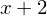
x**2 - 2*x - 10
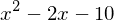
sqrt(x) - sin(x)
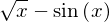
Puede definir múltiples variables separando por comas cada representación simbólica:
p,q,r = symbols("p,q,r")
p**q + r/q
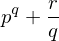
Además de la forma anterior, también es posible tener variables simbólicas disponibles si se importan
del módulo abc de SymPy:
from sympy.abc import a,b,c,d
(a + b)*(c + d)
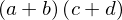
12.2. Manipulación algebraica#
SymPy es una poderosa herramienta de manipulación y simplificación algebraica, en lo subsiguiente se revisarán algunos casos elementales y se describirá el uso de las herramientas (funciones) que proporciona.
En primera instancia se definen algunas variables simbólicas a utilizar:
x,y,z = symbols("x,y,z")
a,b,c,d,k,m,n = symbols("a,b,c,d,k,m,n")
Para las expresiones algebraicas formadas en SymPy por default se evalúan y simplifican los términos semejantes. Vea los siguientes casos:
x**2 + 5*x**3 - 10*x**2 + 5*x - 10*(x + 1)
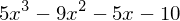
a*b + c*d + x/y - 7*a*b
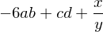
Naturalmente para simplificaciones y operaciones un poco menos obvias, habrá que especificarle lo que se requiere.
Una de las operaciones elementales de simplificación en álgebra es la factorización, SymPy dispone de la
función factor, la cual toma una expresión algebraica y la factoriza conforme sea posible.
Por ejemplo, suponiendo que se tiene la expresión \(ab + ac\), es sencillo identificar que se puede
factorizar como \(a(b+c)\), SymPy hace lo mismo sin sobresalto alguno.
factor(a*b + a*c)
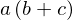
De igual forma se sabe que una expresión de la forma \( ac + ad + bc + bd \) se puede factorizar como \( (a + b) (d + c) \).
factor( a*c + a*d + b*c + b*d )
Así, para un binomio al cuadrado se sabe que, \( (a+b)(a+b) \) es la factorización de una expresión del tipo \( a^2 + 2ab + b^2 \).
factor(a**2 + 2*a*b + b**2)
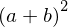
¿Se puede hacer el proceso inverso, es decir, dados dos factores obtener su expresión expandida?
Por supuesto, para ello se hace uso de la función expand.
expand( (x-7)*(x-3) )
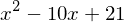
SymPy puede manejar cualquier cantidad de factores y devolver la expresión que resulta de realizar la multiplicación algebraica, sin estar limitada siquiera por la cantidad de variables simbólicas.
expand( (x + y)*(x - y) )
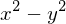
expand( (x + y)*(x+y) )
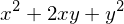
expand( (x + y)**2 )
expand( (x + y)**3 )
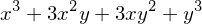
expand( a*(m + n)**2 )
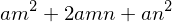
De manera general, si requiere simplificar una expresión algebraica SymPy dispone de una función más o menos universal que funcionará en la mayoría de los casos: simplify. Por ejemplo, suponiendo que
se tiene la siguiente expresión algebraica racional y se requiere reducir lo más posible:
Se puede notar que tanto en el numerador como en el denominador se puede factorizar \(x\), lo cual conduce a:
Con SymPy:
simplify( (x**2 - 3*x)/(x**2 + 3*x) )
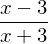
Lo mismo para una expresión que involucre funciones trigonométricas, por ejemplo, cualquiera que haya cursado matemáticas del nivel secundario, al menos, sabe que \(\sin^2 x + \cos^2 x = 1 \), y también lo sabe SymPy:
simplify( sin(x)**2 + cos(x)**2 )
Pero también sabe que \( \cos x \cos y - \sin x \sin y = \cos(x+y) \).
simplify( cos(x)*cos(y) - sin(x)*sin(y) )
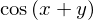
O bien:
simplify( (1+tan(x)**2)/(1+cot(x)**2) )
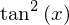
Habitualmente para la manipulación de expresiones que contienen funciones trigonométricas se suele utilizar
la función trigsimp que en muchos casos lo que devuelva coincidirá con simplify.
Sin embargo, si en lugar de reducir una expresión trigonométrica se requiere expandirla, como
en el caso del coseno o seno de la suma de dos ángulos, probablemente por intuición se utilizaría expand,
pero aquí no funciona como puede verificar.
expand( sin(x + y) )
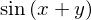
En este caso puede utilizar la función expand_trig, la cual maneja de mejor manera las manipulaciones trigonométricas:
expand_trig( sin(x+y) )
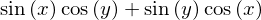
12.3. Resolviendo ecuaciones e inecuaciones#
SymPy dispone de la función solve, la cual resuelve desde ecuaciones polinomiales, sistemas de ecuaciones lineales,
inecuaciones, hasta sistemas de ecuaciones no lineales. La sintaxis de solve es polimórfica y en general depende
de lo que se requiera resolver, tendiendo siempre a que sea posible especificar el mínimo número de parámetros.
En las siguientes subsecciones se describen algunos casos, se asumirá en lo subsiguiente que además de importar SymPy se definieron las siguientes variables simbólicas:
x,y,z = symbols("x,y,z")
a,b,c = symbols("a,b,c")
12.3.1. Ecuaciones polinómicas#
La sintaxis más elemental de solve es pasando un sólo argumento, el cual se espera sea una expresión algebraica
y se considera que esta estará igualada a cero. Por ejemplo para resolver la ecuación lineal \( x - 3 = 0 \):
solve( x - 3 )
Para una ecuación cuadrática \( x^2 + 2x + 2 = 0 \):
solve(x**2 + 2*x + 2)
En este caso la ecuación tiene soluciones complejas, la unidad imaginaria en SymPy se especifica mediante
el símbolo I.
Si se quisiera resolver la ecuación cuadrática en su forma general, por intuición y lo que sabemos hasta ahora, haríamos:
solve(a*x**2 + b*x + c)
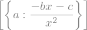
Note que el problema está en que al haber más de una variable simbólica, SymPy no sabe con respecto a qué variable debe resolver y toma la primera en orden alfabético. Para especificar explícitamente respecto a qué variable resolver, se puede indicar mediante un segundo argumento:
solve(a*x**2 + b*x + c, x)
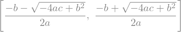
Puede verificar que devuelve, en efecto, la tan conocida fórmula general.
12.3.2. Ecuaciones trigonométricas#
Para resolver ecuaciones trigonométricas podemos utilizar también la función solve. Por ejemplo, vamos a resolver la ecuación:
Para esto definimos la ecuación trigonométrica utilizando Eq:
eq = Eq(sin(x), 0)
eq
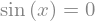
Y resolvemos con solve:
sol = solve(eq, x)
sol
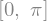
Observa que nos devuelve dos soluciones, sin embargo, en este punto seguramente recordarás que la función \(\sin x\) corta múltiples veces al eje de las abscisas. Esto implica, evidentemente, que la ecuación \(\sin x = 0\) tiene multitud de soluciones y que lo que nos devuelve solve son únicamente dos de ellas.
plot(eq.lhs, (x,-2*pi,2*pi), size=(4,3))
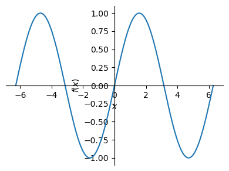
<sympy.plotting.backends.matplotlibbackend.matplotlib.MatplotlibBackend at 0x26e6ff47c80>
12.4. Álgebra lineal#
12.4.1. Vectores#
Un vector denota una cantidad física que tiene magnitud y orientación en un determinado sistema de referencia.
En SymPy, los vectores se pueden definir mediante la clase Matrix del módulo matrices. Para crear un vector, a la clase Matrix le pasamos como argumento una lista.
Por ejemplo, vamos a definir dos vectores \(\vec{u}\) y \(\vec{v}\), dados por:
u = Matrix([2,1,-5])
v = Matrix([4,-1,3])
Una suma y resta vectorial se pueden ejecutar sin muchas complicaciones, mediante los operadores aritméticos ya conocidos.
u + v
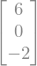
v - u
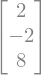
La magnitud de un vector la podemos calcular utilizando el método norm.
u.norm()
v.norm()
Recuerde que si requiere ver las expresiones resultantes en la notación decimal debe usar evalf.
El producto escalar de dos vectores puede calcularlo utilizando el método dot, por
ejemplo \( \vec{u} \cdot \vec{v} \) lo puede especificar como:
u.dot(v)
Para calcular el producto vectorial utilice el método cross, por ejemplo
\( \vec{u} \times \vec{v} \):
u.cross(v)
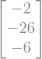
Recuerde que el producto vectorial no es conmutativo, por tanto, \(\vec{v} \times \vec{u} \) resultará en un vector diferente al obtenido anteriormente, como puede verificar enseguida:
v.cross(u)
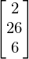
Obviamente, los vectores en SymPy también pueden contener expresiones simbólicas, veamos el siguiente ejemplo:
a,b,c = symbols("a,b,c")
w = Matrix([a**2 + b**2, c, b - c])
w
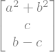
Y podemos trabajar este vector con las operaciones revisadas previamente:
w.dot(u)
w + u
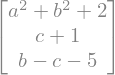
w.norm()
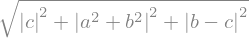
12.4.2. Matrices#
Las matrices son arreglos rectangulares de números o cantidades simbólicas. En SymPy, se definen utilizando la clase Matrix, pasándole como argumentos una lista de listas, donde cada sublista corresponde a una fila de la matriz.
Matrix([[20,50,100], [10,35,200], [-30,20,80]])
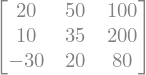
Podemos también crear otras matrices particulares con algunas funciones. Por ejemplo, la función zeros nos permite crear una matriz compuesta de ceros:
zeros(3,5)
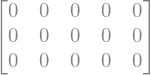
El primer argumento indica la cantidad de filas y el segundo la cantidad de columnas. Si pasamos un único argumento, entonces nos devolverá una matriz cuadrada:
zeros(3)
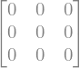
La función ones nos permite crear matrices de unos, con una sintaxis similar a zeros:
ones(4,2)
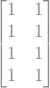
La función eye nos permite crear una matriz identidad, recibiendo como argumento el tamaño de la matriz:
eye(4)
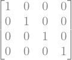
La función diag permite crear una matriz diagonal:
diag(-4,5,2)
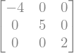
La clase Matrix también nos permite definir matrices utilizando una función lambda que genere sus elementos.
Matrix(5,5, lambda i,j: i+j)
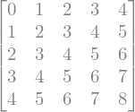
Observa que en este caso cada elemento de la matriz es la suma del índice i de su fila y el índice j de su columna.
12.4.3. Operaciones básicas con matrices#
Vamos a definir las matrices \(A\), \(B\) y \(C\), dadas por:
A = Matrix([[20,50,100], [10,35,200], [-30,20,80]])
B = Matrix([[12,26,45],[3,-15,18],[54,20,0]])
C = Matrix([[5,9], [2,3], [-10,8]])
A, B, C
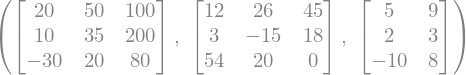
Para realizar una suma de matrices utilizamos el operador +:
A + B
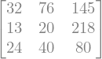
Naturalmente, y como es esperable, SymPy conoce y aplica las reglas de álgebra de matrices, observe:
A + C
---------------------------------------------------------------------------
ShapeError Traceback (most recent call last)
Input In [110], in <cell line: 1>()
----> 1 A + C
File ~\anaconda3\lib\site-packages\sympy\core\decorators.py:106, in call_highest_priority.<locals>.priority_decorator.<locals>.binary_op_wrapper(self, other)
104 if f is not None:
105 return f(self)
--> 106 return func(self, other)
File ~\anaconda3\lib\site-packages\sympy\matrices\common.py:2714, in MatrixArithmetic.__add__(self, other)
2712 if hasattr(other, 'shape'):
2713 if self.shape != other.shape:
-> 2714 raise ShapeError("Matrix size mismatch: %s + %s" % (
2715 self.shape, other.shape))
2717 # honest SymPy matrices defer to their class's routine
2718 if getattr(other, 'is_Matrix', False):
2719 # call the highest-priority class's _eval_add
ShapeError: Matrix size mismatch: (3, 3) + (3, 2)
SymPy es muy explícito en ese tipo de situaciones y nos imprime un mensaje de error suficientemente descriptivo. Recuerde que no podemos sumar dos matrices de distinto tamaño.
Para efectuar una multiplicación utilizamos el operador *:
A * C
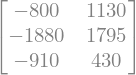
Es importante considerar que para que dos matrices se pueden multiplicar, la primera debe tener tantas columnas como filas tenga la segunda, es decir, si tenemos una matriz \(A\) de tamaño \(m \times n\) y una matriz \(B\) de tamaño \( p \times q \), entonces para poder efectuar el producto \(AB\) entonces \( n = p \) y la matriz resultante tendrá un tamaño \( m \times q \).
De las matrices definidas con anterioridad, es sencillo ver que el producto de \(AC\) se puede efectuar puesto que \(A\) tiene 3 columnas, la misma cantidad de filas que posee \(C\), y resulta una matriz de \(3 \times 2\). Sin embargo, no es posible efectuar el producto \(CA\), dado que \(C\) tiene \(2\) columnas y \(A\) tiene 3 filas, tal y como se puede verificar enseguida:
C*A
---------------------------------------------------------------------------
ShapeError Traceback (most recent call last)
Input In [113], in <cell line: 1>()
----> 1 C*A
File ~\anaconda3\lib\site-packages\sympy\core\decorators.py:106, in call_highest_priority.<locals>.priority_decorator.<locals>.binary_op_wrapper(self, other)
104 if f is not None:
105 return f(self)
--> 106 return func(self, other)
File ~\anaconda3\lib\site-packages\sympy\matrices\common.py:2774, in MatrixArithmetic.__mul__(self, other)
2745 @call_highest_priority('__rmul__')
2746 def __mul__(self, other):
2747 """Return self*other where other is either a scalar or a matrix
2748 of compatible dimensions.
2749
(...)
2771 matrix_multiply_elementwise
2772 """
-> 2774 return self.multiply(other)
File ~\anaconda3\lib\site-packages\sympy\matrices\common.py:2796, in MatrixArithmetic.multiply(self, other, dotprodsimp)
2792 if (hasattr(other, 'shape') and len(other.shape) == 2 and
2793 (getattr(other, 'is_Matrix', True) or
2794 getattr(other, 'is_MatrixLike', True))):
2795 if self.shape[1] != other.shape[0]:
-> 2796 raise ShapeError("Matrix size mismatch: %s * %s." % (
2797 self.shape, other.shape))
2799 # honest SymPy matrices defer to their class's routine
2800 if getattr(other, 'is_Matrix', False):
ShapeError: Matrix size mismatch: (3, 2) * (3, 3).
12.4.4. Determinante, inversa y transpuesta#
El determinante de una matriz podemos calcularlo mediante la función det:
det(B)
O bien, mediante el propio método det:
B.det()
La matriz inversa podemos calcularla utilizando el método inv:
A.inv()
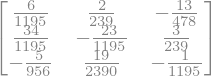
B.inv()
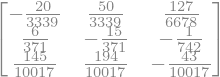
Recuerda que la matriz inversa está definida únicamente para matrices cuadradas. Si intentamos calcular el determinante de una matriz que no cumple esta condición entonces Python/SymPy lanzará un NonSquareMatrixError.
C.inv()
---------------------------------------------------------------------------
NonSquareMatrixError Traceback (most recent call last)
Input In [132], in <cell line: 1>()
----> 1 C.inv()
File ~\anaconda3\lib\site-packages\sympy\matrices\matrices.py:2223, in MatrixBase.inv(self, method, iszerofunc, try_block_diag)
2222 def inv(self, method=None, iszerofunc=_iszero, try_block_diag=False):
-> 2223 return _inv(self, method=method, iszerofunc=iszerofunc,
2224 try_block_diag=try_block_diag)
File ~\anaconda3\lib\site-packages\sympy\matrices\inverse.py:459, in _inv(M, method, iszerofunc, try_block_diag)
456 return diag(*r)
458 if method == "GE":
--> 459 rv = M.inverse_GE(iszerofunc=iszerofunc)
460 elif method == "LU":
461 rv = M.inverse_LU(iszerofunc=iszerofunc)
File ~\anaconda3\lib\site-packages\sympy\matrices\matrices.py:2208, in MatrixBase.inverse_GE(self, iszerofunc)
2207 def inverse_GE(self, iszerofunc=_iszero):
-> 2208 return _inv_GE(self, iszerofunc=iszerofunc)
File ~\anaconda3\lib\site-packages\sympy\matrices\inverse.py:239, in _inv_GE(M, iszerofunc)
236 from .dense import Matrix
238 if not M.is_square:
--> 239 raise NonSquareMatrixError("A Matrix must be square to invert.")
241 big = Matrix.hstack(M.as_mutable(), Matrix.eye(M.rows))
242 red = big.rref(iszerofunc=iszerofunc, simplify=True)[0]
NonSquareMatrixError: A Matrix must be square to invert.
La transpuesta de una matriz se puede obtener accediendo al atributo T
C.T
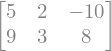
12.4.5. Sistemas de ecuaciones lineales#
Un sistema de ecuaciones lineales es un conjunto finito de ecuaciones lineales, cada una con las mismas variables. Una solución de un sistema de ecuaciones lineales es un vector que simultáneamente es una solución de cada ecuación en el sistema. El conjunto solución de un sistema de ecuaciones lineales es el conjunto de todas las soluciones del sistema. [1]
De manera general, un sistema de \(m\) ecuaciones lineales con \(n\) incógnitas se puede escribir de la siguiente manera:
Este sistema se puede escribir en la forma de una ecuación matricial:
La matriz \(A\) se denomina la matriz de coeficientes del sistema, el vector \(\mathbf{x}\) contiene a los valores desconocidos y el vector \(\mathbf{b}\) se denomina el vector de términos independientes.
En SymPy podemos resolver un sistema de ecuaciones lineales de varias maneras, por ejemplo, una primera aproximación puede ser utilizar la función solve que veíamos en secciones previas. En este caso la sintaxis más simple para solve sería:
solve([eq1, eq2, ..., eqn])
Donde [eq1, eq2, ..., eqn] es una lista que contiene las expresiones simbólicas de las ecuaciones lineales a resolver.
Para ejemplificar vamos a resolver el siguiente sistema de dos ecuaciones lineales con dos incógnitas:
x1,x2 = symbols("x_1, x_2")
eq1 = x1 + x2
eq2 = x1 - x2 - 2
solve([eq1, eq2])
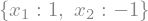
Observa que en las variables eq1 y eq2 estamos definiendo las ecuaciones lineales reescritas de tal manera que del lado derecho tengamos un cero (recuerda que SymPy asume que una ecuación que pasamos a la función solve está igualada a cero), es decir, el término independiente lo pasamos del lado izquierdo:
Sin embargo, también podemos utilizar Eq para definir ambos miembros de una ecuación, veamos como lo haríamos:
x1,x2 = symbols("x_1, x_2")
eq1 = Eq(x1 + x2, 0)
eq2 = Eq(x1 - x2, 2)
solve([eq1, eq2], (x1,x2))
Naturalmente, ambas maneras son equivalentes. La función solve nos devuelve un diccionario con las incógnitas como claves y como valor la solución correspondiente.
Podemos utilizar también la función linsolve, la cual está pensada especificamente para resolver sistemas de ecuaciones lineales. La sintaxis básica de linsolve es:
linsolve(sistema, variables)
Donde sistema es una lista de las ecuaciones a resolver y variables una lista (o tupla) de las variables o valores desconocidos. Para ejemplificar vamos a resolver el siguiente sistema de ecuaciones:
x1,x2,x3 = symbols("x_1, x_2, x_3")
eq1 = 2*x1 + 4*x2 + 6*x3 - 18
eq2 = 4*x1 + 5*x2 + 6*x3 - 24
eq3 = 3*x1 + x2 - 2*x3 - 4
linsolve([eq1, eq2, eq3], (x1,x2,x3))
A la función linsolve se le puede pasar también el sistema en la forma de una tupla que contiene la matriz de coeficientes \(A\) y el vector de términos independientes \(\mathbf{b}\), para el sistema de ecuaciones anterior se tendría que:
Entonces:
A = Matrix([[2,4,6], [4,5,6], [3,1,-2]])
b = Matrix([18,24,4])
linsolve((A,b), (x1,x2,x3))
También es posible utilizar la matriz aumentada del sistema de ecuaciones como argumento de la función linsolve, por ejemplo:
A_ = Matrix([[2,4,6,18], [4,5,6,24], [3,1,-2,4]]) # matriz aumentada
linsolve(A_, (x1,x2,x3))
12.4.6. Eigenvalores y eigenvectores#
Los eigenvalores y eigenvectores son características de una matriz en el sentido de que contienen información importante acerca de la naturaleza de la matriz. [1]
Sea \(A\) una matriz de \(n \times n\). Un escalar \(\lambda\) se llama eigenvalor de \(A\) si existe un vector \(\vec{x}\) distinto de cero tal que \( A \vec{x} = \lambda \vec{x} \). Tal vector \(\vec{x}\) se llama eigenvector de \(A\) correspondiente a \(\lambda\).
Para encontrar los eigenvalores de una matriz \(A\), resolvemos la ecuación característica:
donde \(I\) es la matriz identidad de la misma dimensión que \(A\). Resolver este sistema da un polinomio en \(\lambda\), cuyas raíces son los eigenvalores.
Para cada eigenvalor \(\lambda\), los eigenvectores se encuentran resolviendo el sistema de ecuaciones lineales:
En SymPy podemos calcular los eigenvalores de una matriz utilizando el método eigenvals:
A = Matrix([[2,1], [1,2]])
A.eigenvals()
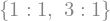
Observa que en este caso el método nos devuelve un diccionario con los dos eigenvalores como claves y su multiplicidad como valor.
Los eigenvectores de \(A\) podemos determinarlos utilizando el método eigenvects:
A.eigenvects()
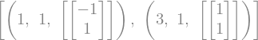
El método eigenvects nos devuelve una lista de tuplas. Cada tupla contiene el eigenvalor, su multiplicidad y una lista de eigenvectores asociados a ese eigenvalor.
12.5. Cálculo diferencial e integral#
12.5.1. Límites#
Para calcular límites matemáticos SymPy dispone de la función limit, la cual requiere al menos tres
argumentos de entrada: la función, variable y valor al que tiende. Por ejemplo, si se quiere calcular
el siguiente límite:
Tendríamos que hacer lo siguiente:
x = symbols("x")
limit(sin(x)/x, x, 0)
Para calcular limites laterales debe pasarse un cuarto argumento, por ejemplo:
limit(1/(x-5), x, 5, "-")
limit(1/(x-5), x, 5, "+")

El símbolo + denota el cálculo de un límite lateral por la derecha y el símbolo - un límite lateral por la izquierda.
Para calcular límites cuando la variable tiende a infinito podemos utilizar oo para especificarlo. Por ejemplo, vamos a calcular el siguiente límite:
limit((x**2-1)/(x**2+1), x, oo)
12.5.2. Derivadas#
Las derivadas en Python se calculan utilizando la función diff, misma que en su forma más simple espera
al menos dos argumentos: una expresión algebraica y una variable respecto a la cual derivar. Por ejemplo:
diff(exp(x)*cos(x), x)
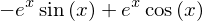
Es posible también especificar una derivada de orden superior mediante un tercer argumento:
diff(5*x**2 + 3*x - 10, x, 2)
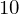
La instrucción anterior calcula la segunda derivada de la función \( f(x) = 5x^2 + 3x - 10 \).
12.5.2.1. Derivación implícita#
Existen funciones en las que no pueden expresarse explícitamente una variable en términos de la otra, y en su lugar se define una relación implícita entre las variables. Por ejemplo, la siguiente es una función definida implícitamente:
Para derivarla utilizamos el método de derivación implícita, el cual consiste en:
Derivar ambos lados de la ecuación con respecto a \(x\), considerando que \(y=y(x)\).
Resolver la ecuación que resulta para \(dy/dx\)
Podemos implementar esto en SymPy de la siguiente manera:
x = symbols("x")
y = Function("y")(x) # Definimos a y(x)
eq = x**2 + y**2 - 25 # Creamos la ecuación implícita
d_eq = diff(eq, x) # Derivamos con respecto a x
dy_dx = diff(y,x) # Derivada de y(x) con respecto a x -> dy/dx
solve(d_eq, dy_dx) # Despejamos dy/dx de la derivada
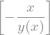
12.5.2.2. Máximos y mínimos de una función#
Supongamos que en \(x=x_1\) la derivada de la función \(y=f(x)\) se reduce a cero, es decir, \(f'(x)=0\). Admitamos, además que existe la segunda derivada, \(f''(x)\), y es continua sobre cierta vecindad del punto \(x_1\). Para este caso es válido el siguiente teorema:
Teorema 1. Si \(f'(x_1)=0\), entonces en \(x=x_1\) la función tiene máximo cuando \(f''(x_1)<0\), y, un mínimo cuando \(f''(x_1)>0\).
De acuerdo al teorema anterior, para caracterizar los puntos críticos de una función \(f(x)\) es necesario utilizar el criterio de la segunda derivada. Entendiendo que los puntos críticos se obtienen de resolver la ecuación \(f'(x)=0\).
En SymPy, utilizando la función diff podemos calcular las derivadas y luego con solve resolver la ecuación \(f'(x)=0\) para encontrar los puntos críticos. Para ejemplificar vamos a calcular y caracterizar los puntos críticos de la función \(f(x) = x^3 - x\), comenzamos primero definiendo dicha función:
x = symbols("x")
fx = x**3 - x
fx
Ahora vamos a calcular tanto la primera como la segunda derivada:
df = diff(fx, x) # 1era. derivada
d2f = diff(fx, x, 2) # 2da. derivada
df, d2f
Los puntos críticos los calculamos resolviendo la ecuación \(f'(x)=0\)
pc = solve(Eq(df, 0))
pc
Para determinar si se trata de un mínimo o máximo, utilizamos el criterio de la segunda derivada, sustituyendo los puntos críticos en \(f''(x)\), es decir:
d2f.subs(x,pc[0]) # Primer punto crítico
d2f.subs(x,pc[1]) # Segundo punto crítico
Con esto determinamos, de acuerdo con el teorema 1, que el primer punto crítico \(\left(\frac{-\sqrt{3}}{3}\right)\) es un máximo y el segundo \(\left(\frac{\sqrt{3}}{3}\right)\) un mínimo. Podemos comprobarlo trazando la gráfica correspondiente:
plot(fx, (x, -1, 1), size=(4,3))
<sympy.plotting.backends.matplotlibbackend.matplotlib.MatplotlibBackend at 0x26e7105ad50>
Los valores máximos y mínimos de \(f(x)\) podemos obtenerlos sustituyendo \(x=p_{c_1}\) y \(x=p_{c_2}\), lo cual podemos hacer mediante el método subs:
fx.subs(x,pc[0]) # valor máximo
fx.subs(x,pc[1]) # valor mínimo
Este proceso lo podríamos automatizar un poco con una función como la siguiente:
def max_min_fun(f):
"""
Calcula los máximos y mínimos de una función f(x)
"""
df = diff(f, x) # 1era. derivada
d2f = diff(f, x, 2) # 2da. derivada
pcs = solve(Eq(df,0)) # puntos críticos
maxmin = {}
for k,pc in enumerate(pcs):
if d2f.subs(x,pc)>0:
maxmin.update({f"PC{k+1} (Mín.)": (pc, f.subs(x,pc))})
elif d2f.subs(x,pc)<0:
maxmin.update({f"PC{k+1} (Máx.)": (pc, f.subs(x,pc))})
else:
maxmin.update({f"PC{k+1} (Indefinido)": (pc, f.subs(x,pc))})
return maxmin
Probemos con el ejemplo trabajado previamente:
max_min_fun(fx)
{'PC1 (Máx.)': (-sqrt(3)/3, 2*sqrt(3)/9),
'PC2 (Mín.)': (sqrt(3)/3, -2*sqrt(3)/9)}
Vemos que la función devuelve un diccionario con los puntos críticos de la función, indicando además si se trata de un máximo o mínimo.
12.5.3. Integrales#
Para calcular integrales vamos a utilizar la función integrate, la cual acepta al menos dos argumentos: la función a integrar y la variable con respecto a la cual se integra, por ejemplo:
x = symbols("x")
integrate(x**2 + 3*x - 7, x)
Esta instrucción calcula la integral:
Note que la expresión algebraica devuelta por Python no contiene la constante de integración, por default SymPy no la considera. Sí en algún caso específico necesita a la constante de integración puede adicionarla manualmente.
Las integrales definidas se pueden calcular si el segundo argumento se hace una tupla de la forma (variable, a, b), donde a y b indican el límite inferior y superior a evaluar en la integral. Por ejemplo, para calcular:
integrate(sin(x), (x, 0, pi))
O para:
z = symbols("z")
integrate(z**2, (z,-5,5))
12.6. Ecuaciones diferenciales#
Una ecuación diferencial es cualquier ecuación que contiene las derivadas de una o más variables dependientes con respecto a una o más variables independientes [2]. Las ecuaciones diferenciales son fundamentales en ingeniería, para modelar una amplia variedad de fenómenos físicos.
Si una ecuación diferencial contiene únicamente derivadas ordinarias de una o más variables dependientes con respecto a una sola variable independiente, se dice que es una ecuación diferencial ordinaria (EDO). A continuación se muestran ejemplos de EDO:
Una ecuación en la que se presentan las derivadas parciales de una o más variables dependientes de dos o más variables independientes se denomina ecuación diferencial parcial (EDP), por ejemplo:
12.6.1. ¿Cómo formar la expresión de una EDO?#
Una ecuación diferencial ordinaria en el caso más general tendrá términos que dependen de la función, sus derivadas, la variable independiente y constantes. Por ejemplo, observa la siguiente EDO de primer orden:
El término \( \sin x \) depende de la variable independiente \(x\), \(y\) es la función \(y(x)\) y \(dy/dx\) su derivada de primer orden. En SymPy, para definir la variable independiente utilizamos symbols, sin embargo, para crear \(y(x)\) debemos utilizar Function para indicar que estamos creando una función que depende de una variable, así pues:
x = symbols("x")
y = Function("y")(x)
Para definir la derivada de primer orden de \(y\) podemos utilizar el método diff:
y.diff()
Para escribir la ecuación diferencial completa utilizamos la clase Eq:
edo = Eq(y.diff(), y + sin(x))
edo
Las derivadas de orden superior se pueden definir utilizando también diff, pero agregando el argumento correspondiente al orden de la derivada, por ejemplo, para la derivada de segundo orden:
y.diff(x,2)
Vamos a suponer que queremos definir la siguiente ecuación diferencial de segundo orden:
No pierdas de vista que en este caso \(t\) es la variable independiente y \(x(t)\) la función. Tendríamos entonces:
t = symbols("t")
x = Function("x")(t)
edo = Eq(x.diff(t,2) + 64*x, 0)
edo
La función \(x\) se puede crear sin indicar explícitamente la variable de la cual depende, por ejemplo:
t = symbols("t")
x = Function("x")
Para poder utilizar la función \(x(t)\) tendríamos que pasarle como argumento la variable independiente, es decir:
x(t)
De tal manera que la EDO de segundo orden anterior podríamos definirla como sigue:
edo = Eq(x(t).diff(t,2) + 64*x(t), 0)
edo
12.6.2. La función dsolve#
Utilizando SymPy podemos resolver varios tipos de ecuaciones diferenciales. Para la mayoría de estos casos trabajaremos con la función dsolve, la cual se utiliza para resolver cualquier tipo (soportado) de EDO. La sintaxis más básica es:
dsolve(eq, f)
Siendo
equna expresión de la clase Equality, o bien, una expresión que se asume está igualada a cero. En ambos casos, se considera que este argumento contiene la descripción de la EDO.fes la función con respecto a la cual se resuelve la ecuación diferencial; y en general, es un objeto de la clase Function
Para resolver problemas de valor inicial (PVI) podemos agregar el argumento ics a la función:
dsolve(eq, f, ics=ICS)
Siendo ICSun diccionario que contiene las condiciones iniciales en la forma:
{f(x0): x1, f(x).diff(x).subs(x, x2):x3, ...}
12.6.3. EDO de primer orden#
Una ecuación diferencial ordinaria de primer orden tiene la siguiente forma general:
Podemos utilizar dsolve para resolver EDO de este tipo. Por ejemplo, vamos a encontrar la solución para la siguiente EDO de primer orden:
La variable independiente es \(x\) y la función es \(y\), entonces:
x = symbols("x")
y = Function("y")(x)
edo = Eq(y.diff() - (4/x)*y, x**5 * exp(x))
edo
dsolve(edo, y)
Veamos un ejemplo más, vamos a calcular una solución para:
Donde \(k\) es una constante, \(Q\) es la función que depende de la variable independiente \(t\), entonces:
t = symbols("t")
k = symbols("k")
Q = Function("Q")(t)
edo = Eq(Q.diff(), k*(Q - 70))
edo
dsolve(edo, Q)
Revisemos ahora cómo resolver problemas de valor inicial. Supongamos que queremos calcular la solución para:
Entonces:
x = symbols("x") # variable independiente
y = Function("y")(x) # función y(x)
ICS = {y.subs(x,0): 4} # condicion inicial y(0)=4
edo = Eq(y.diff() + y, x) # creamos la expresión de la EDO
dsolve(edo, y, ics=ICS)
Lo anterior también puede escribirse de la siguiente manera:
x = symbols("x") # variable independiente
y = Function("y") # función y, no indicamos explícitamente que depende de x.
ICS = {y(0): 4} # Podemos usar y(0) en lugar de y.subs(x,0)
edo = Eq(y(x).diff() + y(x), x) # Es necesario escribir y(x)
dsolve(edo, y(x), ics=ICS)
Observa que la diferencia está en cómo definimos la función \(y\). En el segundo caso no definimos explícitamente, al momento de crear y, la variable de la cual depende, lo cual implica que para sustituir \(x=0\) en la condición inicial se puede hacer con la sintaxis y(0), sin embargo al momento de definir la EDO es necesario también indicar explícitamente que es una y(x).
12.6.4. EDO de segundo orden#
Vamos a resolver la siguiente EDO de segundo orden:
x = symbols("x") # variable independiente
y = Function("y")(x) # función y(x)
edo = Eq(2*y.diff(x,2) - 5*y.diff() - 3*y, 0)
edo
dsolve(edo, y)
Ahora veremos cómo resolver el siguiente problema de valor inicial de segundo orden:
x = symbols("x")
y = Function("y")
ICS = {y(0): -1,
y(x).diff(x).subs(x,0): 2} # condiciones iniciales
edo = Eq(4*y(x).diff(x,2) + 4*y(x).diff() + 17*y(x), 0)
edo
sol = dsolve(edo, y(x), ics=ICS)
sol
12.6.5. Sistemas de EDO de primer orden#
Un sistema de ecuaciones diferenciales ordinarias de primer orden consiste en un conjunto de ecuaciones donde las incógnitas son funciones de una variable independiente y cada ecuación involucra derivadas de primer orden de estas funciones. Un sistema con \(n\) EDO de primer orden tiene la siguiente forma general:
Siendo \(x_1\), \(x_2\), \(\cdots\), \(x_n\) las funciones desconocidas.
En SymPy podemos utilizar la función dsolve para resolver un sistema de EDO de primer orden, con la siguiente sintaxis:
dsolve([edo_1, edo_2, ..., edo_n])
Siendo edo_1, edo_2, edo_n las \(n\) EDO que conforman el sistema, pasadas en forma de una lista (o tupla). Para ejemplificar vamos a resolver el siguiente sistema de EDO de primer orden:
t = symbols("t") # variable independiente
x = Function("x")(t) # x(t)
y = Function("y")(t) # y(t)
edo_1 = Eq(x.diff(), x + 3*y) # 1era EDO de primer orden
edo_2 = Eq(y.diff(), 5*x + 3*y) # 2da EDO de primer orden
edo_1, edo_2
dsolve([edo_1, edo_2])
12.6.6. Transformada de Laplace#
La transformada de Laplace es una herramienta matemática utilizada para transformar una función de una variable (generalmente el tiempo \(t\)) en una función de una variable compleja \(s\). Esta transformación es muy útil en ingeniería, ya que permite convertir ecuaciones diferenciales en ecuaciones algebraicas, lo que facilita su resolución.
Sea \(f\) una función definida para \(t \leq 0\). Entonces se dice que la integral:
es la transformada de Laplace de \(f\), siempre y cuando la integral converja. [2]
Por ejemplo, podemos calcular por definición la transformada de Laplace de la función \(f(t)= t\), para esto en SymPy haríamos lo siguiente:
s = symbols("s", positive=True)
t = symbols("t")
f = t
integrate(exp(-s*t)*f, (t,0,oo))
O para la función \( f(t) = \cos(t) \):
s = symbols("s", positive=True)
t = symbols("t")
f = cos(t)
integrate(exp(-s*t)*f, (t,0,oo))
SymPy nos proporciona también una función laplace_transform que nos permite calcular la transformada de Laplace de una función \(f(t)\), cuya sintaxis es:
laplace_transform(f, t, s)
Veamos cómo funciona con el mismo ejemplo anterior:
s = symbols("s", positive=True)
t = symbols("t", positive=True)
f = cos(t)
laplace_transform(f, t, s)
Si queremos que nos devuelva únicamente la transformada entonces le podemos pasar el argumento noconds=True:
laplace_transform(f, t, s, noconds=True)
12.6.6.1. Transformadas de derivadas#
La transformada de Laplace se puede utilizar para resolver ecuaciones diferenciales, para esto es necesario aplicar la transformada de Laplace a la función y sus derivadas, para expresarlas en el dominio de la variable \(s\). Sea \(y(t)\) una función que depende del tiempo, la transformada de Laplace de esta función la podemos expresar como:
La transformada de Laplace de la derivada de primer orden de esta función está dada por:
Y la transformada de Laplace de la derivada de segundo orden de esta función está dada por:
Ahora, vamos a utilizar SymPy para expresar la transformada de Laplace de una función \(y(t)\):
t = symbols("t")
s = symbols("s")
y = Function("y")(t)
laplace_transform(y, t, s, noconds=True)
Observa que en este caso SymPy nos devuelve una expresión que deja indicada dicha transformada, sin embargo, podemos hacer de forma manual la sustitución, para esto vamos a definir una función Y que dependa de s, es decir:
Y = Function("Y")(s)
Y
Y luego, vamos a definir un diccionario que contenga la sustitución de la transformada por esta función:
ys_sust = {laplace_transform(y, t, s, noconds=True): Y}
De tal manera que si aplicamos nuevamente la transformada a \(y(t)\) y hacemos la sustitución previa, entonces obtenemos \(Y(s)\):
laplace_transform(y, t, s, noconds=True).subs(ys_sust)
Podemos ahora pasar a calcular la transformadad de Laplace de una derivada de primer orden:
laplace_transform(y.diff(), t, s, noconds=True) # Transformada de una derivada de primer orden
Observa que la transformada de la función \(Y(s)\) se sigue expresando en la forma \(\mathcal{L}_t\left[y(t)\right](s)\), no obstante podemos también hacer la sustitución que indicábamos antes:
laplace_transform(y.diff(), t, s, noconds=True).subs(ys_sust)
De manera similar podemos hacer para la derivada de segundo orden:
laplace_transform(y.diff(t,2), t, s, noconds=True).subs(ys_sust) # Transformada de una derivada de segundo orden
12.6.6.2. Resolviendo PVI#
Resolviendo el siguiente PVI:
t = symbols("t", positive=True)
s = symbols("s", positive=True)
y = Function("y")(t) # y(t)
Y = Function("Y")(s) # Y(s)
ys_sust = {laplace_transform(y, t, s, noconds=True): Y }
ics = {y.subs(t,0): 6} # condición inicial
edo = Eq(y.diff() + 3*y, 13*sin(2*t))
edo
ec_transformada = laplace_transform(edo.lhs - edo.rhs, t, s, noconds=True).subs(ys_sust | ics)
ec_transformada
Ys_ec = Eq(Y, solve(ec_laplace, Y)[0])
Ys_ec
y_t = Eq(y, inverse_laplace_transform( Ys_ec.rhs, s, t) )
y_t
12.7. Cálculo vectorial#
12.7.1. Funciones multivariable#
Por escribir
x,y = symbols("x,y")
fxy = x**2 + y**2
fxy
plotting.plot3d(fxy, (x,-5,5), (y,-5,5), size=(4,3))
<sympy.plotting.backends.matplotlibbackend.matplotlib.MatplotlibBackend at 0x1e48f182ea0>
fxy.subs({x:0.75, y:0.5})
12.7.2. Derivadas parciales#
12.7.3. Vector gradiente#
12.7.4. Integrales múltiples#
12.7.5. Funciones vectoriales#
12.8. Ejercicios#
Utilice Python/SymPy para resolver los siguientes ejercicios:
1. Resuelva las siguientes ecuaciones (para la variable \(x\)):
\( x + 3x = 10 \)
\( 2x^2 - 10x + 5 = 0 \)
\( \frac{a}{x} + bx - 8 = 0 \)
\( \cos x + \sin x = 10 \)
\( kx - 10 = x^2 \)
2. Calcule las siguientes derivadas:
\( \frac{d}{dx} \left( \cos x \right) \)
\( \frac{d}{dt} \left( at^2 - 2\tan t - \frac{10}{t} \right) \)
\( \frac{d}{dz} \left( z^5 - 10 e^{-z} \right) \)
3. Calcule las siguientes integrales indefinidas:
\( \int \cos x \, dx \)
\( \int \left( x^3 - 8x \right)\, dx \)
\( \int \left( e^{-3x} \sin x \right) \, dx \)
\( \int \left( s^2 + ks - m \right) \, ds \)
4. Calcule las siguientes integrales definidas:
\( \int_{a}^{b} \sin x \, dx \)
\( \int_{-10}^{5} x^2 + 10x \, dx \)
\( \int_{0}^{2} 10e^{-z} \, dz \)
5. Resuelva la siguiente ecuación diferencial de primer orden:
6. Escriba una función que dados como entrada dos vectores, determine sí estos son paralelos (Sugerencia: puedes utilizar el producto cruz).
7. En estática, la fuerza resultante \(\vec{F}_R\) de un sistema de fuerzas corresponde a la suma vectorial de los vectores fuerza:
Desarrolle una función llamada calcula_fuerza_resultante que reciba como datos de entrada un conjunto de vectores fuerza y devuelva el vector de fuerza resultante.
8. En estática, el momento resultante de un sistema de fuerzas con respecto a un punto \(O\) dado se puede determinar sumando los momentos que producen cada una de las fuerzas:
Donde \(\vec{r}_i\) son vectores de posición y \(\vec{F}_i\) los vectores de fuerza. Escriba un función llamada calcula_momento_resultante que reciba como datos de entrada un conjunto de
vectores fuerza y un conjunto de vectores de posición. Se deberá devolver el momento total producido por las fuerzas con respecto al punto.